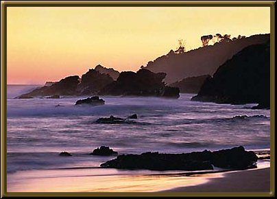

Mallacoota is a very beautiful area near the border of New South Wales. We used to holiday here quite often when I was a child. There's good fishing, good sailing and a lot of places to just enjoy the peace of the area.
Photographer: Mark or Jean Stokes